Results
| MC Basic setup |
MC Basic strains |
MC Basic setup with groundwater |
MC Basic strains with groundwater |
| 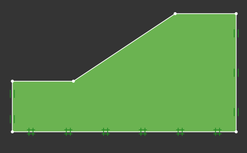 |
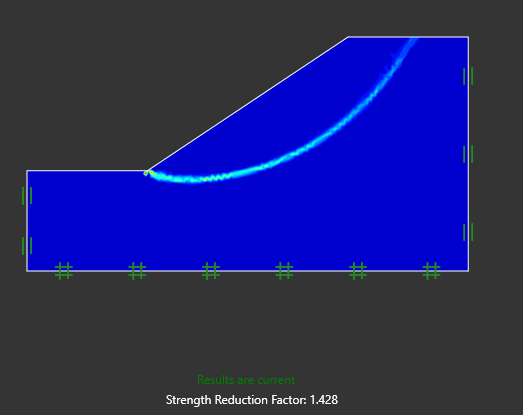 |
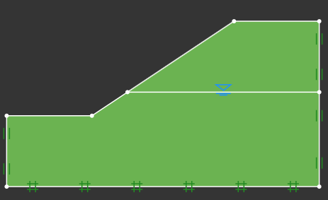 |
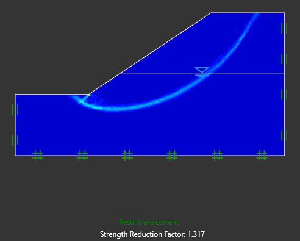 |
| MC Clay setup |
MC Clay strains |
MC Clay setup with groundwater |
MC Clay strains with groundwater |
| 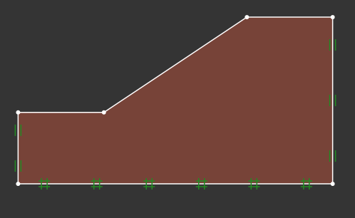 |
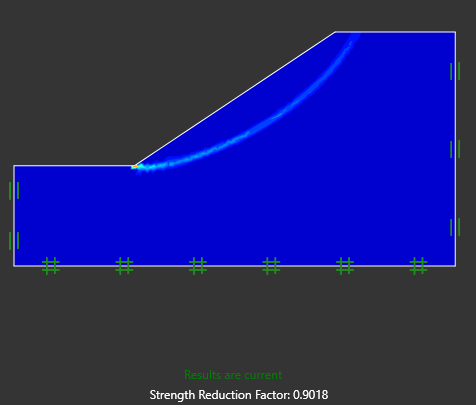 |
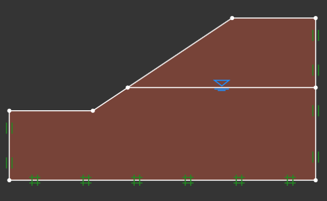 |
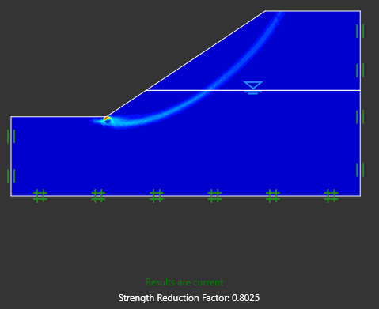 |
| MC Clay setup with soil nailing |
MC Clay strains with soil nailing |
MC Clay animation |
MC Clay animation with soil nailing |
| 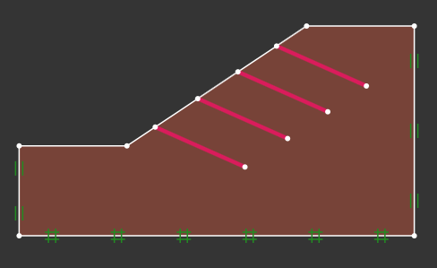 |
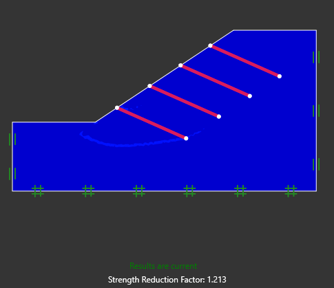 |
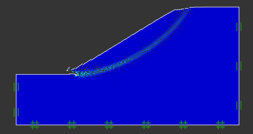 |
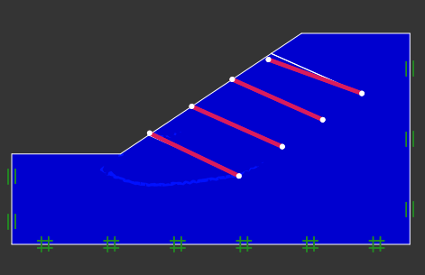 |
| Oso Landlside setup with no GW |
Oso landlside mesh with no GW |
Oso landlside setup with GW |
Oso landslide mesh with GW |
| 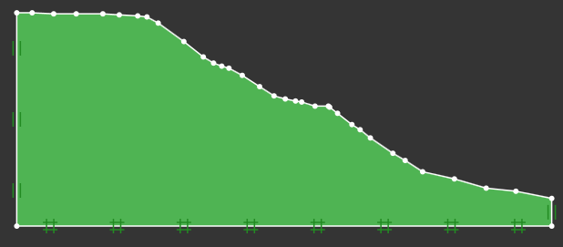 |
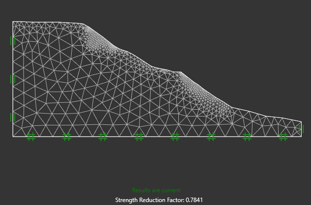 |
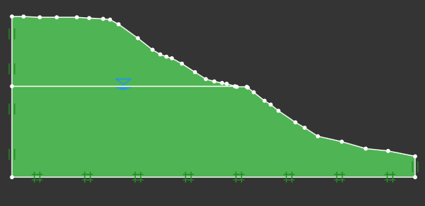 |
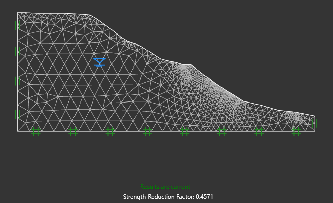 |